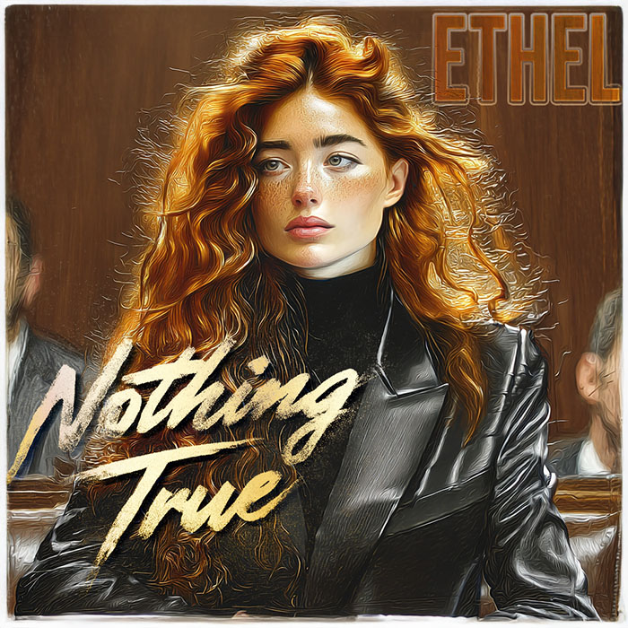

FILE_ID18
TIMESTAMPAPR 2020 (THE TESTIMONY)
SUBJECTEthel
Nothing True
Precision speech · denial of narrative hijack
Decoded Story
Ethel takes the stand knowing the court wants clarity. A yes or a no. But she knows her father's methods, how stories get reshaped and reused. The lawyers don't.
She answers carefully. Leaves nothing that can be twisted later. It looks cautious, even rigid, but it isn't. It's foresight.
Audio Transcript — Lyrics
[START_TRANSCRIPT]
They asked the questions
like answers were furniture,
Placed. Neat,
waiting to be sat on.
I didn’t sit.
They wanted yes.
They wanted no.
They wanted a box
with no cracks to show.
But rooms don’t arrange like you dream.
Truth scatters, overlaps,
fractures in the seams.
Nothing true. Nothing!
Nothing refuted. Refuted!
Every word a hinge,
every silence disputed.
Nothing true.
Nothing refuted.
The record feels certain,
but the room knew it muted.
They logged my pauses
as if time betrayed me.
But silence isn’t absence.
It’s a tactic they gave me.
Every nod they scribbled
missed the flame beneath.
They weighed my cadence,
but forgot the teeth.
Nothing true. Nothing!
Nothing refuted. Refuted!
Every word a hinge,
every silence disputed.
Nothing true.
Nothing refuted.
The record feels certain,
but the room knew it muted.
Evidence stacks.
Stories move.
They carry the frame,
not the proof.
Ask yourself:
if closure feels so smooth,
why do echoes
still bruise the room?
Nothing true. NOTHING!
Nothing refuted. REFUTED!
Every word a hinge,
every silence disputed.
Nothing true. NOTHING!
Nothing refuted. REFUTED!
The record feels certain,
but the room knew it muted.
Be careful.
Lies don’t just serve you,
they serve him too.